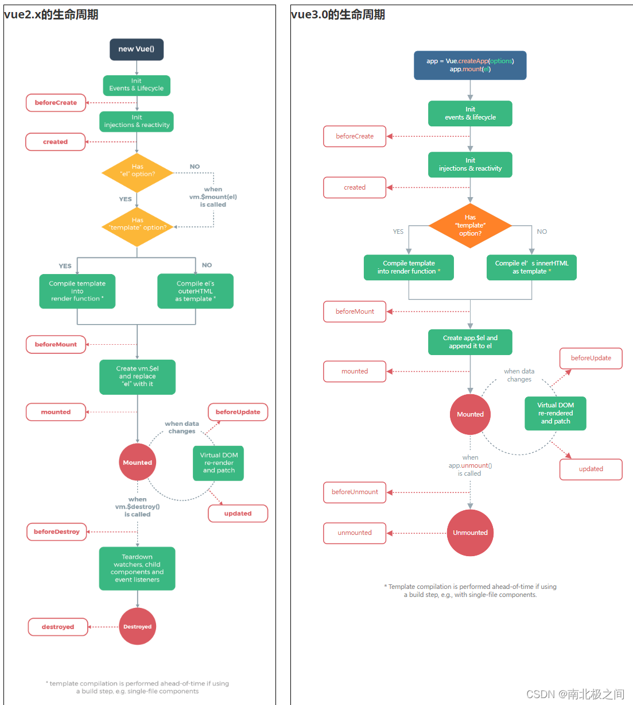

Vue 基础知识
1.vue优点？
答：轻量级框架：只关注视图层，是一个构建数据的视图集合，大小只有几十kb；
简单易学：国人开发，中文文档，不存在语言障碍 ，易于理解和学习；
双向数据绑定：保留了angular的特点，在数据操作方面更为简单；
组件化：保留了react的优点，实现了html的封装和重用，在构建单页面应用方面有着独特的优势；
视图，数据，结构分离：使数据的更改更为简单，不需要进行逻辑代码的修改，只需要操作数据就能完成相关操作；
虚拟DOM：dom操作是非常耗费性能的， 不再使用原生的dom操作节点，极大解放dom操作，但具体操作的还是dom不过是换了另一种方式；
运行速度更快:相比较与react而言，同样是操作虚拟dom，就性能而言，vue存在很大的优势。
2.vue父组件向子组件传递数据？
答：通过props
3.子组件像父组件传递事件？
答：$emit方法
4.v-show和v-if指令的共同点和不同点？
答:
共同点：都能控制元素的显示和隐藏；
不同点：实现本质方法不同，v-show本质就是通过控制css中的display设置为none，控制隐藏，只会编译一次；v-if是动态的向DOM树内添加或者删除DOM元素，若初始值为false，就不会编译了。而且v-if不停的销毁和创建比较消耗性能。
总结：如果要频繁切换某节点，使用v-show(切换开销比较小，初始开销较大)。如果不需要频繁切换某节点使用v-if（初始渲染开销较小，切换开销比较大）。
5.如何让CSS只在当前组件中起作用？
答：在组件中的style前面加上scoped
6.的作用是什么?
答:keep-alive 是 Vue 内置的一个组件，可以使被包含的组件保留状态，或避免重新渲染。
7.如何获取dom?
答：ref=“domName” 用法：this.$refs.domName
8.说出几种vue当中的指令和它的用法？
答：
v-model双向数据绑定；
v-for循环；
v-if v-show 显示与隐藏；
v-on事件；v-once: 只绑定一次。
9.vue-loader是什么？使用它的用途有哪些？
答：vue文件的一个加载器，将template/js/style转换成js模块。
用途：js可以写es6、style样式可以scss或less、template可以加jade等
10.为什么使用key?
答：需要使用key来给每个节点做一个唯一标识，Diff算法就可以正确的识别此节点。
作用主要是为了高效的更新虚拟DOM。
11.axios及安装?
答：请求后台资源的模块。npm install axios –save装好，
js中使用import进来，然后.get或.post。返回在.then函数中如果成功，失败则是在.catch函数中。
12.v-modal的使用。
答：
v-model用于表单数据的双向绑定，其实它就是一个语法糖，这个背后就做了两个操作：
v-bind绑定一个value属性；
v-on指令给当前元素绑定input事件。
13.请说出vue.cli项目中src目录每个文件夹和文件的用法？
答：assets文件夹是放静态资源；components是放组件；router是定义路由相关的配置; app.vue是一个应用主组件；main.js是入口文件。
14.分别简述computed和watch的使用场景
答：
computed:
当一个属性受多个属性影响的时候就需要用到computed
最典型的栗子： 购物车商品结算的时候
只要购买数量,购买价格,优惠券，折扣券等任意一个发生变化，总价都会自动跟踪变化。
watch:
当一条数据影响多条数据的时候就需要用watch
栗子：搜索数据
15.v-on可以监听多个方法吗？
答：可以，栗子：。
16.$ nextTick的使用
答：当你修改了data的值然后马上获取这个dom元素的值，是不能获取到更新后的值，
你需要使用$nextTick这个回调，让修改后的data值渲染更新到dom元素之后在获取，才能成功。
17.vue组件中data为什么必须是一个函数？
答：因为JavaScript的特性所导致，在component中，data必须以函数的形式存在，不可以是对象。
组建中的data写成一个函数，数据以函数返回值的形式定义，这样每次复用组件的时候，都会返回一份新的data，相当于每个组件实例都有自己私有的数据空间，它们只负责各自维护的数据，不会造成混乱。而单纯的写成对象形式，就是所有的组件实例共用了一个data，这样改一个全都改了。
18.渐进式框架的理解
答：主张最少；可以根据不同的需求选择不同的层级；
19.Vue中双向数据绑定是如何实现的？
答：vue 双向数据绑定是通过 数据劫持 结合 发布订阅模式的方式来实现的， 也就是说数据和视图同步，数据发生变化，视图跟着变化，视图变化，数据也随之发生改变；
核心：关于VUE双向数据绑定，其核心是 Object.defineProperty()方法。
20.单页面应用和多页面应用区别及优缺点
答：
单页面应用（SPA），通俗一点说就是指只有一个主页面的应用，浏览器一开始要加载所有必须的 html, js, css。所有的页面内容都包含在这个所谓的主页面中。但在写的时候，还是会分开写（页面片段），然后在交互的时候由路由程序动态载入，单页面的页面跳转，仅刷新局部资源。多应用于pc端。
多页面（MPA），就是指一个应用中有多个页面，页面跳转时是整页刷新
单页面的优点：
用户体验好，快，内容的改变不需要重新加载整个页面，基于这一点spa对服务器压力较小；前后端分离；页面效果会比较炫酷（比如切换页面内容时的专场动画）。
单页面缺点：
不利于seo；导航不可用，如果一定要导航需要自行实现前进、后退。（由于是单页面不能用浏览器的前进后退功能，所以需要自己建立堆栈管理）；初次加载时耗时多；页面复杂度提高很多。
1.什么是 vue 生命周期？有什么作用？
答：每个 Vue 实例在被创建时都要经过一系列的初始化过程——例如，需要设置数据监听、编译模板、将实例挂载到 DOM 并在数据变化时更新 DOM 等。同时在这个过程中也会运行一些叫做 生命周期钩子 的函数，这给了用户在不同阶段添加自己的代码的机会。（ps：生命周期钩子就是生命周期函数）例如，如果要通过某些插件操作DOM节点，如想在页面渲染完后弹出广告窗， 那我们最早可在mounted 中进行。
2.第一次页面加载会触发哪几个钩子？
答：beforeCreate， created， beforeMount， mounted
3.简述每个周期具体适合哪些场景
答：beforeCreate：在new一个vue实例后，只有一些默认的生命周期钩子和默认事件，其他的东西都还没创建。在beforeCreate生命周期执行的时候，data和methods中的数据都还没有初始化。不能在这个阶段使用data中的数据和methods中的方法
create：data 和 methods都已经被初始化好了，如果要调用 methods 中的方法，或者操作 data 中的数据，最早可以在这个阶段中操作
beforeMount：执行到这个钩子的时候，在内存中已经编译好了模板了，但是还没有挂载到页面中，此时，页面还是旧的
mounted：执行到这个钩子的时候，就表示Vue实例已经初始化完成了。此时组件脱离了创建阶段，进入到了运行阶段。 如果我们想要通过插件操作页面上的DOM节点，最早可以在和这个阶段中进行
beforeUpdate： 当执行这个钩子时，页面中的显示的数据还是旧的，data中的数据是更新后的， 页面还没有和最新的数据保持同步
updated：页面显示的数据和data中的数据已经保持同步了，都是最新的
beforeDestory：Vue实例从运行阶段进入到了销毁阶段，这个时候上所有的 data 和 methods ， 指令， 过滤器 ……都是处于可用状态。还没有真正被销毁
destroyed： 这个时候上所有的 data 和 methods ， 指令， 过滤器 ……都是处于不可用状态。组件已经被销毁了。
4.created和mounted的区别
答：created:在模板渲染成html前调用，即通常初始化某些属性值，然后再渲染成视图。
mounted:在模板渲染成html后调用，通常是初始化页面完成后，再对html的dom节点进行一些需要的操作。
5.vue获取数据在哪个周期函数
答：一般 created/beforeMount/mounted 皆可.
比如如果你要操作 DOM , 那肯定 mounted 时候才能操作.
6.请详细说下你对vue生命周期的理解？
答：总共分为8个阶段创建前/后，载入前/后，更新前/后，销毁前/后。
创建前/后： 在beforeCreated阶段，vue实例的挂载元素 $ el和数据对象data都为undefined，还未初始化。在created阶段，vue实例的数据对象data有了，$ el还没有。
载入前/后：在beforeMount阶段，vue实例的$el和data都初始化了，但还是挂载之前为虚拟的dom节点，data.message还未替换。在mounted阶段，vue实例挂载完成，data.message成功渲染。
更新前/后：当data变化时，会触发beforeUpdate和updated方法。
销毁前/后：在执行destroy方法后，对data的改变不会再触发周期函数，说明此时vue实例已经解除了事件监听以及和dom的绑定，但是dom结构依然存在。
1.mvvm 框架是什么？
答：vue是实现了双向数据绑定的mvvm框架，当视图改变更新模型层，当模型层改变更新视图层。在vue中，使用了双向绑定技术，就是View的变化能实时让Model发生变化，而Model的变化也能实时更新到View。
2.vue-router 是什么?它有哪些组件
答：vue用来写路由一个插件。router-link、router-view
3.active-class 是哪个组件的属性？
答：vue-router模块的router-link组件。children数组来定义子路由
4.怎么定义 vue-router 的动态路由? 怎么获取传过来的值？
答：在router目录下的index.js文件中，对path属性加上/:id。 使用router对象的params.id。
5.vue-router 有哪几种导航钩子?
答：三种，
第一种：是全局导航钩子：router.beforeEach(to,from,next)，作用：跳转前进行判断拦截。
第二种：组件内的钩子
第三种：单独路由独享组件
6.$route 和 $router 的区别
答： r o u t e r 是 V u e R o u t e r 的 实 例 ， 在 s c r i p t 标 签 中 想 要 导 航 到 不 同 的 U R L , 使 用 router是VueRouter的实例，在script标签中想要导航到不同的URL,使用 router是VueRouter的实例，在script标签中想要导航到不同的URL,使用router.push方法。返回上一个历史history用$router.to(-1)
$route为当前router跳转对象。里面可以获取当前路由的name,path,query,parmas等。
7.vue-router的两种模式
答:hash模式：即地址栏 URL 中的 # 符号；
history模式：window.history对象打印出来可以看到里边提供的方法和记录长度。利用了 HTML5 History Interface 中新增的 pushState() 和 replaceState() 方法。（需要特定浏览器支持）。
8.vue-router实现路由懒加载（ 动态加载路由 ）
答:三种方式
第一种：vue异步组件技术 ==== 异步加载，vue-router配置路由 , 使用vue的异步组件技术 , 可以实现按需加载 .但是,这种情况下一个组件生成一个js文件。
第二种：路由懒加载(使用import)。
第三种：webpack提供的require.ensure()，vue-router配置路由，使用webpack的require.ensure技术，也可以实现按需加载。这种情况下，多个路由指定相同的chunkName，会合并打包成一个js文件。
1.vuex是什么？怎么使用？哪种功能场景使用它？
答：vue框架中状态管理。在main.js引入store，注入。
新建了一个目录store.js，…… export 。
场景有：单页应用中，组件之间的状态。音乐播放、登录状态、加入购物车
2.vuex有哪几种属性？
答：有五种，分别是 State、 Getter、Mutation 、Action、 Module
state => 基本数据(数据源存放地)
getters => 从基本数据派生出来的数据
mutations => 提交更改数据的方法，同步！
actions => 像一个装饰器，包裹mutations，使之可以异步。
modules => 模块化Vuex
1、 Vue2.0 和 Vue3.0 有什么区别？
响应式系统的重新配置，使用代理替换对象.define属性，使用代理优势：
可直接监控阵列类型的数据变化
监听的目标是对象本身，不需要像Object.defineProperty那样遍历每个属性，有一定的性能提升
可拦截应用、拥有密钥、有等13种方法，以及Object.define属性没有办法
直接添加对象属性/删除
新增组合API，更好的逻辑重用和代码组织
重构虚拟 DOM
模板编译时间优化，将一些静态节点编译成常量
slot优化，采取槽编译成懒人功能，拿槽渲染的决定留给子组件
在模板中提取和重用内联事件（最初，每次渲染时都会重新生成内联函数）
代码结构调整，更方便树摇动，使其更小
使用打字脚本替换流
2、Vue3带来了什么改变？
1.性能的提升
打包大小减少41%
初次渲染快55%, 更新渲染快133%
内存减少54%
……
2.源码的升级
使用Proxy代替defineProperty实现响应式
重写虚拟DOM的实现和Tree-Shaking
……
3.拥抱TypeScript
Vue3可以更好的支持TypeScript
4.新的特性
Composition API（组合API）
setup配置
ref与reactive
watch与watchEffect
provide与inject
……
新的内置组件
Fragment
Teleport
Suspense
其他改变
新的生命周期钩子
data 选项应始终被声明为一个函数
移除keyCode支持作为 v-on 的修饰符
……
4.vue3还有哪些其他改变？
data选项应始终被声明为一个函数。
过度类名的更改：
1 | Vue2.x写法 |
移除keyCode作为 v-on 的修饰符，同时也不再支持config.keyCodes
移除v-on.native修饰符
父组件中绑定事件
1 | v-on:close="handleComponentEvent" |
子组件中声明自定义事件
1 | <script> |
移除过滤器（filter）
过滤器虽然这看起来很方便，但它需要一个自定义语法，打破大括号内表达式是 “只是 JavaScript” 的假设，这不仅有学习成本，而且有实现成本！建议用方法调用或计算属性去替换过滤器。
……
3、生命周期（vue2和vue3的生命周期对比）有哪些？
vue2.x的生命周期

vue3.0的生命周期

Vue3.0中可以继续使用Vue2.x中的生命周期钩子，但有有两个被更名：
beforeDestroy改名为 beforeUnmount
destroyed改名为 unmounted
Vue3.0也提供了 Composition API 形式的生命周期钩子，与Vue2.x中钩子对应关系如下：
beforeCreate===>setup()
created=======>setup()
beforeMount ===>onBeforeMount
mounted=======>onMounted
beforeUpdate===>onBeforeUpdate
updated =======>onUpdated
beforeUnmount ==>onBeforeUnmount
unmounted =====>onUnmounted
4、Vue3.0中的响应式原理是什么？vue2的响应式原理是什么？
vue2.x的响应式
实现原理：
对象类型：通过Object.defineProperty()对属性的读取、修改进行拦截（数据劫持）。
数组类型：通过重写更新数组的一系列方法来实现拦截。（对数组的变更方法进行了包裹）。
Object.defineProperty(data, ‘count’, {
get () {},
set () {}
})
存在问题：
新增属性、删除属性, 界面不会更新。
直接通过下标修改数组, 界面不会自动更新。
Vue3.0的响应式
实现原理:
通过Proxy（代理）: 拦截对象中任意属性的变化, 包括：属性值的读写、属性的添加、属性的删除等。
通过Reflect（反射）: 对源对象的属性进行操作。
MDN文档中描述的Proxy与Reflect：
Proxy：Proxy - JavaScript | MDN
Reflect：Reflect - JavaScript | MDN
1 | new Proxy(data, { |
5、vue3响应式数据的判断？
isRef: 检查一个值是否为一个 ref 对象
isReactive: 检查一个对象是否是由 reactive 创建的响应式代理
isReadonly: 检查一个对象是否是由 readonly 创建的只读代理
isProxy: 检查一个对象是否是由 reactive 或者 readonly 方法创建的代理
6、vue3的常用 Composition API有哪些？
官方文档: 介绍 | Vue.js
1.拉开序幕的setup
理解：Vue3.0中一个新的配置项，值为一个函数。
setup是所有Composition API（组合API）“ 表演的舞台 ”。
组件中所用到的：数据、方法等等，均要配置在setup中。
setup函数的两种返回值：
若返回一个对象，则对象中的属性、方法, 在模板中均可以直接使用。（重点关注！）
若返回一个渲染函数：则可以自定义渲染内容。（了解）
5.setup的几个注意点
setup执行的时机
在beforeCreate之前执行一次，this是undefined。
setup的参数
props：值为对象，包含：组件外部传递过来，且组件内部声明接收了的属性。
context：上下文对象
attrs: 值为对象，包含：组件外部传递过来，但没有在props配置中声明的属性, 相当于 this.$attrs。
slots: 收到的插槽内容, 相当于 this.$slots。
emit: 分发自定义事件的函数, 相当于 this.$emit。
尽量不要与Vue2.x配置混用
Vue2.x配置（data、methos、computed…）中可以访问到setup中的属性、方法。
但在setup中不能访问到Vue2.x配置（data、methos、computed…）。
如果有重名, setup优先。
setup不能是一个async函数，因为返回值不再是return的对象, 而是promise, 模板看不到return对象中的属性。（后期也可以返回一个Promise实例，但需要Suspense和异步组件的配合）
2.ref函数
作用: 定义一个响应式的数据
语法: const xxx = ref(initValue)
创建一个包含响应式数据的引用对象（reference对象，简称ref对象）。
JS中操作数据： xxx.value
模板中读取数据: 不需要.value，直接：
备注：
接收的数据可以是：基本类型、也可以是对象类型。
基本类型的数据：响应式依然是靠Object.defineProperty()的get与set完成的。
对象类型的数据：内部 “ 求助 ” 了Vue3.0中的一个新函数—— reactive函数。
3.reactive函数
作用: 定义一个对象类型的响应式数据（基本类型不要用它，要用ref函数）
语法：const 代理对象= reactive(源对象)接收一个对象（或数组），返回一个代理对象（Proxy的实例对象，简称proxy对象）
reactive定义的响应式数据是“深层次的”。
内部基于 ES6 的 Proxy 实现，通过代理对象操作源对象内部数据进行操作。
4.reactive对比ref
从定义数据角度对比：
ref用来定义：基本类型数据。
reactive用来定义：对象（或数组）类型数据。
备注：ref也可以用来定义对象（或数组）类型数据, 它内部会自动通过reactive转为代理对象。
从原理角度对比：
ref通过Object.defineProperty()的get与set来实现响应式（数据劫持）。
reactive通过使用Proxy来实现响应式（数据劫持）, 并通过Reflect操作源对象内部的数据。
从使用角度对比：
ref定义的数据：操作数据需要.value，读取数据时模板中直接读取不需要.value。
reactive定义的数据：操作数据与读取数据：均不需要.value。
5.计算属性与监视
1.computed函数
与Vue2.x中computed配置功能一致
写法
1 | import {computed} from 'vue' |
2.watch函数
与Vue2.x中watch配置功能一致
两个小“坑”：
监视reactive定义的响应式数据时：oldValue无法正确获取、强制开启了深度监视（deep配置失效）。
监视reactive定义的响应式数据中某个属性时：deep配置有效。
1 |
|
3.watchEffect函数
watch的套路是：既要指明监视的属性，也要指明监视的回调。
watchEffect的套路是：不用指明监视哪个属性，监视的回调中用到哪个属性，那就监视哪个属性。
watchEffect有点像computed：
但computed注重的计算出来的值（回调函数的返回值），所以必须要写返回值。
而watchEffect更注重的是过程（回调函数的函数体），所以不用写返回值。
1 | //watchEffect所指定的回调中用到的数据只要发生变化，则直接重新执行回调。 |
10.toRef
作用：创建一个 ref 对象，其value值指向另一个对象中的某个属性。
语法：const name = toRef(person,’name’)
应用: 要将响应式对象中的某个属性单独提供给外部使用时。
扩展：toRefs 与toRef功能一致，但可以批量创建多个 ref 对象，语法：toRefs(person)
1.shallowReactive 与 shallowRef
shallowReactive：只处理对象最外层属性的响应式（浅响应式）。
shallowRef：只处理基本数据类型的响应式, 不进行对象的响应式处理。
什么时候使用?
如果有一个对象数据，结构比较深, 但变化时只是外层属性变化 ===> shallowReactive。
如果有一个对象数据，后续功能不会修改该对象中的属性，而是生新的对象来替换 ===> shallowRef。
2.readonly 与 shallowReadonly
readonly: 让一个响应式数据变为只读的（深只读）。
shallowReadonly：让一个响应式数据变为只读的（浅只读）。
应用场景: 不希望数据被修改时。
3.toRaw 与 markRaw
toRaw：
作用：将一个由reactive生成的响应式对象转为普通对象。
使用场景：用于读取响应式对象对应的普通对象，对这个普通对象的所有操作，不会引起页面更新。
markRaw：
作用：标记一个对象，使其永远不会再成为响应式对象。
应用场景:
有些值不应被设置为响应式的，例如复杂的第三方类库等。
当渲染具有不可变数据源的大列表时，跳过响应式转换可以提高性能。
4.customRef
作用：创建一个自定义的 ref，并对其依赖项跟踪和更新触发进行显式控制。
实现防抖效果：
1 | <template> |
5.provide 与 inject
作用：实现祖与后代组件间通信
套路：父组件有一个 provide 选项来提供数据，后代组件有一个 inject 选项来开始使用这些数据
具体写法：
祖组件中：
1 | setup(){ |
7、vue3为什么要添加新的组合API，它可以解决哪些问题
在 Vue2.0 中，随着功能的增加，组件越来越复杂，维护起来也越来越难，而难以维护的根本原因是 Vue 的 API 设计迫使开发者使用监视、计算、方法 Option 组织代码，而不是实际的业务逻辑。
另外 Vue2.0 缺乏一个简单而低成本的机制来完成逻辑重用，虽然你可以 minxis 完全重用逻辑，但是当 mixin 更多的时候，就使得很难找到相应的数据，计算出来也许是从中 mixin 的方法，使得类型推断变得困难。
因此组合API外观，主要是解决选项API带来的问题，首先是代码组织，组合API开发者可以根据业务逻辑组织自己的代码，让代码更具可读性和可扩展性，也就是说，当下一个开发者接触到这段不是自己写的代码， 他可以更好地利用代码的组织来反转实际的业务逻辑，或者根据业务逻辑更好地理解代码。
二是实现代码的逻辑提取和重用，当然mixin逻辑提取和重用也可以实现，但就像我之前说的，多个mixin在作用于同一个组件时，很难看出mixin的属性，来源不明确，另外，多个mixin的属性存在变量命名冲突的风险。而 Composition API 恰恰解决了这两个问题。
8、什么是hook？什么是自定义hook函数？
什么是hook？—— 本质是一个函数，把setup函数中使用的Composition API进行了封装。
类似于vue2.x中的mixin。
自定义hook的优势: 复用代码, 让setup中的逻辑更清楚易懂。
9、都说 Composition API 和 React Hook 很像，请问他们的区别是什么？
从 React Hook 从实现的角度来看，React Hook 是基于 useState 的调用顺序来确定下一个 re 渲染时间状态从哪个 useState 开始，所以有以下几个限制
不在循环中、条件、调用嵌套函数 Hook
你必须确保它总是在你这边 React Top level 调用函数 Hook
使用效果、使用备忘录 依赖关系必须手动确定
和 Composition API 是基于 Vue 的响应系统，和 React Hook 相比
在设置函数中，一个组件实例只调用一次设置，而 React Hook 每次重新渲染时，都需要调用 Hook，给 React 带来的 GC 比 Vue 更大的压力，性能也相对 Vue 对我来说也比较慢
Compositon API 你不必担心调用的顺序，它也可以在循环中、条件、在嵌套函数中使用
响应式系统自动实现依赖关系收集，而且组件的性能优化是由 Vue 内部完成的，而 React Hook 的依赖关系需要手动传递，并且依赖关系的顺序必须得到保证，让路 useEffect、useMemo 等等，否则组件性能会因为依赖关系不正确而下降。
虽然Compoliton API看起来像React Hook来使用，但它的设计思路也是React Hook的参考。
10、Options API 存在的问题是什么？Composition API 的优势有哪些？
1.Options API 存在的问题
使用传统OptionsAPI中，新增或者修改一个需求，就需要分别在data，methods，computed里修改 。
2.Composition API 的优势
我们可以更加优雅的组织我们的代码，函数。让相关功能的代码更加有序的组织在一起。
11、vue3有哪些新的组件？
1.Fragment
在Vue2中: 组件必须有一个根标签
在Vue3中: 组件可以没有根标签, 内部会将多个标签包含在一个Fragment虚拟元素中
好处: 减少标签层级, 减小内存占用
2.Teleport
什么是Teleport？—— Teleport 是一种能够将我们的组件html结构移动到指定位置的技术。
1 | <teleport to="移动位置"> |
3.Suspense
等待异步组件时渲染一些额外内容，让应用有更好的用户体验
使用步骤：
异步引入组件
import {defineAsyncComponent} from ‘vue’
const Child = defineAsyncComponent(()=>import(‘./components/Child.vue’))
使用Suspense包裹组件，并配置好default 与 fallback
1 | <template> |
12.vue2和vue3的全局 API 和配置区别？
Vue 2.x 有许多全局 API 和配置。
例如：注册全局组件、注册全局指令等。
1 | //注册全局组件 |
Vue3.0中对这些API做出了调整：全局API的转移
将全局的API，即：Vue.xxx调整到应用实例（app）上
2.x 全局 API（Vue） 3.x 实例 API (app)
Vue.config.xxxx app.config.xxxx
Vue.config.productionTip 移除
Vue.component app.component
Vue.directive app.directive
Vue.mixin app.mixin
Vue.use app.use
Vue.prototype app.config.globalProperties
13、什么是前端服务端渲染？你明白SSR 吗？原理是什么？在vue2和vue3里使用ssr有什么区别？Vue SSR服务端渲染的使用场景有哪些？
客户端渲染vs服务端渲染
客户端渲染我们叫做CSR渲染方式，服务端渲染我们叫做SSR渲染
什么是服务器端渲染？
server side render 前端页面的产生是由服务器端生成的，我们就称之为服务端渲染。
什么是客户端渲染？
client side render 服务端只提供json格式的数据，渲染成什么样子由客户端通过js控制。
运行架构对比：
CSR执行流程：浏览器加载html文件 -> 浏览器下载js文件 -> 浏览器运行vue代码 -> 渲染页面
SSR执行流程：浏览器加载html文件 -> 服务端装填好内容 -> 返回浏览器渲染
开发模式对比
CSR：前后端通过接口JSON数据进行通信，各自开发互不影响
SSR：前后端分工搭配复杂，前端需要写好html模板交给后端，后端装填模板内容返给浏览器
vue框架中的服务端渲染
为了解决第3章节提出的问题，目前我们的vue组件都是在浏览器侧通过js渲染出来的，所以首次加载时间很慢，那么我们把vue组件交给服务端负责渲染，渲染为完整内容之后直接返给客户端，是不是就可以可以解决既想渲染快，还想继续使用vue进行开发的问题了？
vue ssr基础使用：
Server-Side Rendering (SSR) | Vue.js
Vue.js - The Progressive JavaScript Framework
https://vuejs.org/guide/scaling-up/ssr.html
更多详细信息 彻底了解服务器渲染 -SSR 原则，可以参考这篇文章：
vue–ssr_小白小白从不日白的博客-CSDN博客_vue-ssr
目录一、 什么是服务器端渲染？1.1 初始化项目1.2 服务端渲染小案例1.3 右键查看源代码二、什么是客户端渲染？2.1 初始化项目2.2 查看源代码三、客户端渲染vs服务端渲染3.1 运行架构对比3.2 开发模式对比四、vue框架中的服务端渲染4.1 初始化项目4.2 vue服务端渲染最小demo4.3 遗留问题五、理解同构理念六、Nuxt.js框架使用6.1. 使用nuxt.js创建一个ssr项目6.2 启动项目6.3 查看源
https://blog.csdn.net/weixin_43285360/article/details/122695900
当客户端请求服务器时，服务器从数据库中获取相关数据，而服务器内部的Vue组件呈现为HTML，并将数据、HTML并返回给客户端，这样就将数据和组件转换为HTML的过程，就叫做服务器呈现SSR。
而当客户端拿到服务器渲染的HTML和数据，因为数据已经有了，客户端就不需要再请求数据了，只需将数据同步到组件或者Vuex里面就可以了。除了数据意外，HTML和结构已经存在，当客户端渲染组件时，你只需要将HTML的DOM节点映射到虚拟DOM即可，不需要重新创建DOM节点，这将结合数据和HTML同步过程，也称为客户端激活。
使用 SSR 的好处是：
对SEO有利：其实爬虫爬你的页面是件好事，因为有些页面爬虫不支持执行JavaScript的，这不支持实现JavaScript并不是说SSR我的页面会是空的HTML页面，而有了SSR以后，这些抓取工具就可以得到完整的HTML结构化数据，然后被纳入搜索引擎。
更短的白屏时间：相对于客户端渲染，服务器渲染是在浏览器URL中请求的，之后我们得到了一个HTML文本，浏览器只需要解析HTML，构建…直接DOM只是一棵树。而客户端渲染，需要得到一个空的一个第一个HTML页面，此时页面已经进入白屏，之后需要加载并执行JavaScript、请求后端服务器获取数据、JavaScript渲染页面几次才能看到最后一页。特别是在复杂的应用程序中，由于需要加载JavaScript脚本，应用程序越复杂，需要加载JavaScript的脚本越多，它就越大，这导致应用程序的首屏加载时间很长，并且降低了体验感。
在vue2和vue3里使用ssr有什么区别？
vue2时代做ssr一般使用vue2+vue-server-renderer可以实现SSR功能，但是vue3中会报错；
vue3可以不使用插件就实现SSR，就是原生支持。
Vue SSR服务端渲染的使用场景有哪些？
1.SEO需求
SEO（Search Engine Optimization，搜索引擎优化），是一种利用搜索引擎规则，提高网站在搜索引擎内自然排名的技术。通常这需要页面内容在页面加载完成时便已经存在。
前后端分离的纯前端项目，由于这类项目需要页面加载完成后再异步获取数据渲染，因此大部分搜索引擎无法获取到这类项目的内容。Vue SSR正是基于此类需求而给出的一种技术方案。利用nodejs搭建页面渲染服务，在服务端完成之前需要在客户端完成的页面渲染工作，输出给SEO更友好的页面。
2.首屏渲染速度
目前对于首屏渲染速度的提升有许多方案，在ssr之外还有龙骨，墓碑，数据直出。相比于这些方案ssr方案实现是最复杂的，但效果也是最好的。